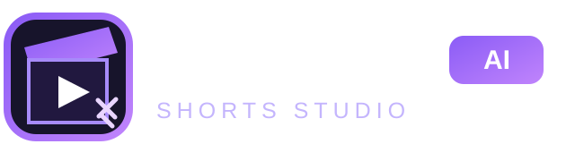

yt_clipper STUDIOTurn a moment into a Short.
Find strong moments with Gemini, then create vertical 9:16 clips locally. No paid infrastructure is required.
1 · Add your video
Use a video you own or have permission to edit. Paste a public YouTube URL for Gemini to find strong moments; load the matching local file to export.
Your access code is sent only to this app’s API and is kept in this browser tab.
2 · Choose your moment
Clip duration must be between 30 and 60 seconds. Choose a Gemini suggestion below or set the range yourself.
Gemini can suggest hooks and caption drafts from a public YouTube video. Review and edit everything before export.
3 · Preview & export
9:16 vertical · WebM export where supportedLoad a local video to preview and export. Gemini analysis works from a public YouTube URL.
Download your Shortyt_clipper AI Shorts Studio · Gemini-assisted · Local rendering · Original yt_clipper CLI and userscript remain untouched.